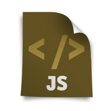
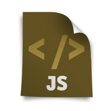

آموزش تصویری Javascript به زبان پارسی
 


جاوا اسکريپت يک زبان اسکريپتي است که اکثرا براي نوشتن کدهایی که قرار است روي مرورگرها و بخصوص در سمت کلاينت اجرا شود مورد استفاده قرار ميگيرد. بسياري از طراحان وب ، براي روح بخشيدن به صفحات استاتيک HTML از پلاگین های جاوااسکريپت بهره ميگيرند (مانند اسلایدرها) . پلاگین های جاوا اسکريپت باعث ميشوند تا مرورگر بتواند بدون رفرش شدن صفحات وب، تغييراتي را در صفحه بصورت Client-side ايجاد کند.
دریافت سورس کد : تمامی سورس کد های مجموعه آموزشی طلوع بصورت رایگان در گیت هاب این مجموعه قرار گرفت
با آرزوی موفقیت برای تمامی دانشجویان عزیز.
سرفصل های آموزشی و آنچه در این مجموعه خواهید آموخت عبارتند از :
- آشنایی با متغیر ها و انواع داده ای در جاوا اسکریپت
- آشنایی توابع موجود در کتابخانه جاوااسکریپت
- آشنایی با تعریف و بکار گیری متغیر ها در جاوا اسکریپت
- آشنایی با تعریف و بکارگیری توابع در جاوا اسکریپت
- آشنایی با متد آلرت در جاوا اسکریپت
- آشنایی با متد رایت در جاوا اسکریپت
- آشنایی با کلاس ویندو در جاوا اسکریپت
- آشنایی با ساخت ماشین حساب در جاوا اسکریپت
- آشنایی با ساخت منو در جاوا اسکریپت
- آشنایی با ساخت ولیدیشن در جاوا اسکریپت
- آشنایی با اجزای کلاس ها ویندو در جاوا اسکریپت
- آشنایی با پخش موزیک در جاوا اسکریپت
- آشنایی با حرکت صفحه در جاوا اسکریپت
- آشنایی با نرم افزار 1st Javascript Editor Pro
نظرات شما
قسمت نظرات با استفاده از سرویس دیسکاس پیاده سازی شده است. متأسفانه این سرویس از داخل ایران قابل دسترس نیست. لطفا از آی پی خارجی استفاده کنید.